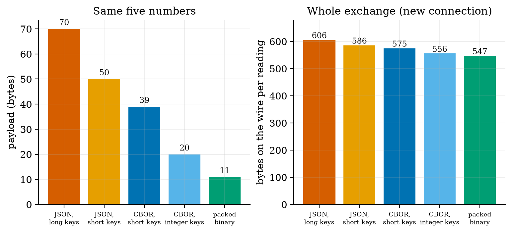
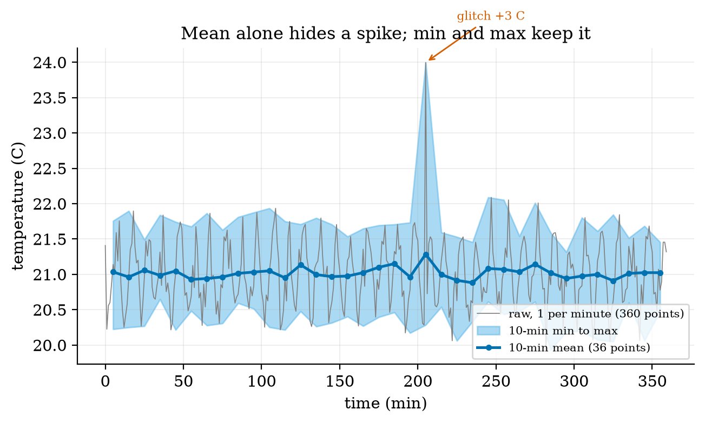
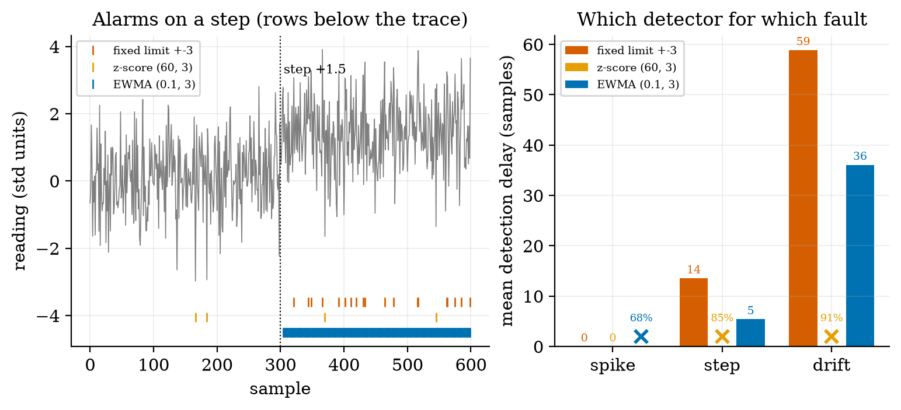
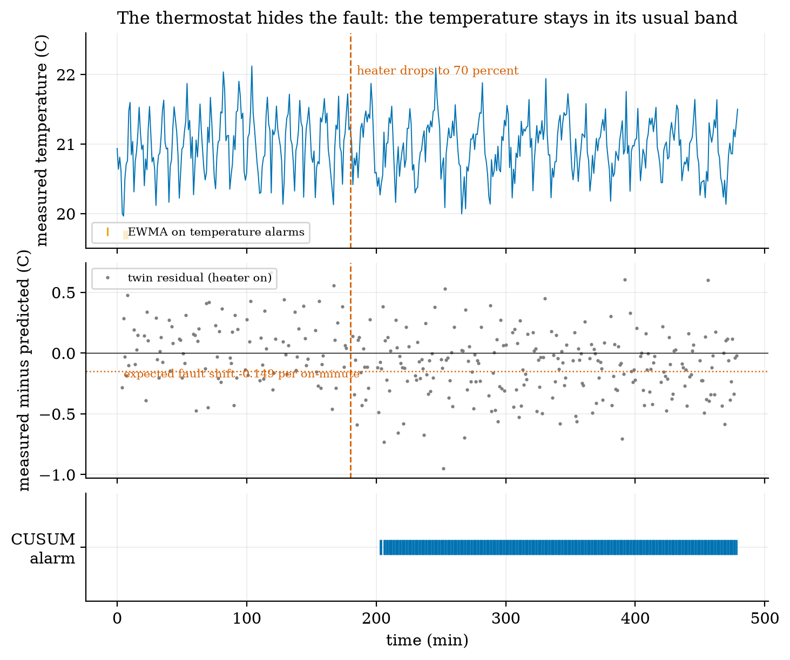
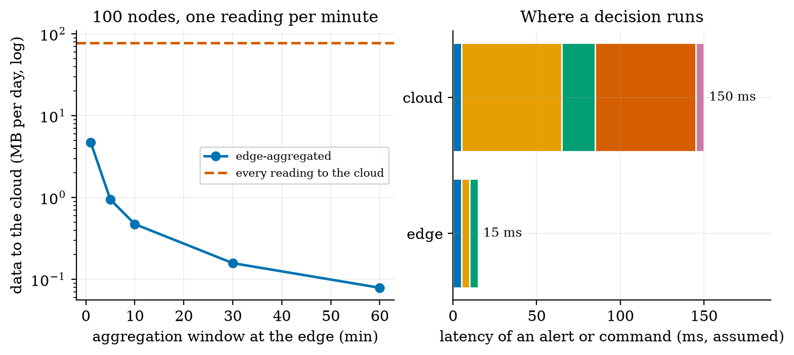
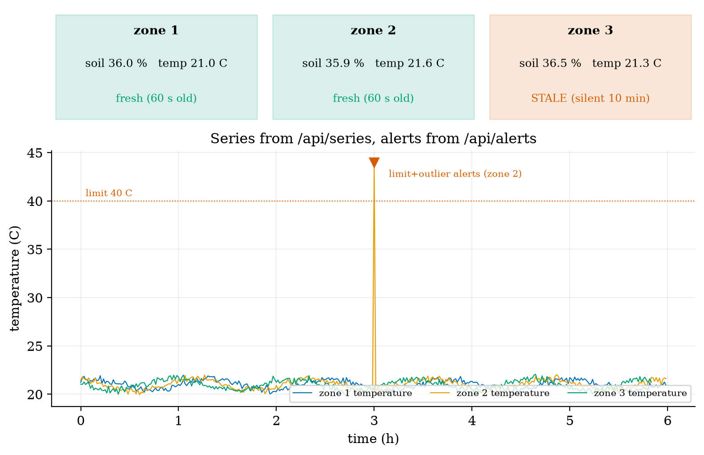

Unit 6 ready
IoT Data, Cloud and Edge Computing: Payloads, Series, Alerts, Twins
Payload formats, aggregation, anomaly detectors, a digital twin, edge versus cloud, and a dashboard.
Session map
After this session you can:
- choose a payload format (JSON, CBOR, packed binary) for a reading and compute what it costs on the wire, and decode a CBOR message by hand;
- aggregate a time series at the edge without hiding spikes (mean, minimum, maximum, count), and say what is lost when you keep only the mean;
- build and compare three streaming anomaly detectors (fixed limit, z-score, EWMA) and a CUSUM, and say which one catches a spike, a step and a drift, with the false-alarm price of each;
- use a digital twin (a model of the plant) to detect a fault that statistics on the measurement are slow to see, and explain the selection bias that a naive residual hides;
- size the edge-versus-cloud trade for the greenhouse in data volume and latency, and read the greenhouse dashboard’s API, alerts and stale-node logic.
- Prerequisites: Unit 1 (room model, thermostat), Unit 3 (EMA gain and delay: used here for the EWMA chart), Unit 5 (MQTT, wire bytes). Mean, standard deviation, Gaussian tails.
- Difficulty ladder used: easy → medium → medium-hard → hard (Sections 3.1 to 3.4); the hardest tier is posed as open questions in Section 3.5.
- Deliverables: this document (.tex, .pdf, .docx), 6 figures, the module
codes/cloud/telemetry_np/(telemetry_np.py: JSON, packed binary and a CBOR codec, time series and downsampling, four detectors, edge arithmetic;dashboard.py: a Flask dashboard fed by MQTT; 10 tests), andcbor_crosscheck_log.txt(the CBOR codec against the independent library cbor2). - Source anchors: all formulas are derived in the text. The CBOR codec was verified against the independent library cbor2 6.1.5 (2000 of 2000 random structures encode to byte-identical output and decode to equal values; the RFC 8949 Appendix A examples quoted in the tests were written from memory and each one agrees with cbor2; the RFC text itself was not fetched). The sensor noise, glitch, heater-fault size, cloud prices, the 540-byte reading of Unit 5 and the stage times of Unit 1 are assumed numbers. Every other number comes from the scripts in
figures/or the module tests.
1. Terms: the term tree
| Term | Symbol | One-line meaning | Where it appears | New / known |
|---|---|---|---|---|
| payload format | how the numbers of a reading are written as bytes | 2 | new | |
| JSON | text format of named fields, easy to read, large | 2 | new | |
| CBOR | binary format with the same data model as JSON, much smaller | 3.3 | new | |
| packed binary | fixed byte layout agreed in advance, no field names | 3.3 | new | |
| time series | values with timestamps, appended in time order | 2 | new | |
| downsampling / aggregation | replacing many samples by a few statistics per time window | 3.3 | new | |
| retention | how long data is kept at each resolution | 3.4 | new | |
| anomaly | a reading or pattern that departs from what is normal | 3.1 | new | |
| point anomaly, level shift, drift | a single outlier, a sudden lasting change, a slow lasting change | 3.3 | new | |
| fixed limit (threshold alarm) | alarm when a value leaves a fixed interval | 3.3 | new | |
| z-score detector | z | alarm when a value is more than k standard deviations from the recent mean | 3.3 | new |
| EWMA control chart | \lambda, L | alarm when the exponentially smoothed value leaves control limits | 3.3 | new |
| CUSUM | k, h | alarm when the accumulated deviation from a baseline exceeds a limit | 3.3 | new |
| false alarm and detection delay | an alarm with nothing wrong; samples from the start of a fault to its alarm | 3.3 | new | |
| alert fatigue | operators ignoring alarms because too many are false | 3.4 | new | |
| digital twin | a model of a physical system run alongside it and compared with it | 3.3 | new | |
| residual | r | measurement minus the model’s prediction | 3.3 | new |
| selection bias | a bias created by looking only at cases chosen by a rule | 3.3 | new | |
| edge aggregation | reducing data near the devices before it goes to the cloud | 3.4 | new | |
| dashboard and REST API | a page that shows current data, fed by JSON endpoints over HTTP | 3.4 | new | |
| stale data | a value not refreshed for longer than a few reporting periods | 3.4 | new |
Terms used but not taught here: TLS (Unit 7), machine-learning anomaly detection (named only), databases and query languages (named only), Kalman filtering (Unit 10).
2. Remember
A reading leaves the node as a payload: bytes in a payload format. JSON writes named fields as text ({"zone":1,"soil_raw":1832,...}): readable, flexible, big. CBOR is a binary encoding with the same data model (numbers, strings, lists, maps) at roughly half the size. A packed binary layout fixes the order and size of every field in advance and sends no names at all: smallest, but sender and receiver must agree on the layout. At the other end the readings are stored as a time series (timestamped values), summarised (aggregation), checked for anomalies, and shown on a dashboard.
A point anomaly is a single wild value (a glitch, a loose wire). A level shift is a sudden, lasting change (a sensor knocked loose, a valve stuck open). A drift is a slow, lasting change (a sensor ageing, a leak growing). A detector good at one shape is often poor at another; Section 3.3 measures it.
A digital twin here means something modest and powerful: a model of the plant (the Unit 1 room equation) that is run alongside the real system, fed the same commands, and compared with the measurements. The difference, the residual, is small when the plant behaves as modelled and grows when it does not, which makes faults visible that the measurement alone hides.
Memory hooks.
- JSON is for humans, CBOR is for machines that want to be understood by humans, packed binary is for machines only.
- Keep the mean, the minimum and the maximum: the mean tells the trend, the extremes tell the trouble.
- Fixed limit catches the cliff, EWMA catches the slope, z-score catches the surprise.
- Model-based beats model-free whenever the model is right: it knows what the actuator should have done.
Before you read on: three predictions (answers in Section 10).
- The same five numbers are sent as long-key JSON (70 bytes) or packed binary (11 bytes). How much smaller is the whole exchange on the wire for a node that reconnects every wake-up (540 bytes of overhead in Unit 5): 85%, 50% or about 10%?
- A +3 ^\circC one-minute glitch occurs inside a 10-minute window. By how much does the window’s mean move: 3.0, 1.5 or 0.3 ^\circC?
- Six sensors report every minute and each alarm limit is \pm3 standard deviations. About how many false alarms per day should you expect: under 1, about 5 or over 20?
Recall quiz (answers in Section 10).
- Which payload format needs no field names, and what does it cost?
- Why should an edge aggregate keep the minimum and maximum, not only the mean?
- Which detector would you choose for a slow drift, and which for a single spike?
- What is a residual in a digital twin?
- When is a node’s value called stale?
3. Understand: the derivation
3.1 Tier 1 (easy): intuition and a picture
Everything so far produced a number every minute. This Unit asks what happens to it. It is packed into bytes (Figure 1), carried by MQTT (Unit 5), stored, summarised, checked for trouble and displayed (Figure 6). Three choices decide how good the system is: how the number is written, where it is reduced (device, edge, cloud) and what counts as trouble. We take them in turn, always with a measurement.
How the number is written. One reading of the soil node has five numbers: zone, soil value, temperature, battery voltage and a timestamp. Written as long-key JSON it is 70 bytes; with short keys, 50; as CBOR with short keys, 39; as CBOR with integer keys and scaled integers, 20; as packed binary, 11 bytes (Figure 1, left). The information is identical. Whether the difference matters depends on the whole exchange (Figure 1, right): a node that reconnects at every wake-up pays 606 bytes on the wire with the long JSON and 547 with the packed binary, a saving of 59 bytes, 9.7% (prediction 1 of Section 2: about 10%); a node that keeps its connection pays 181 and 122 bytes, a saving of 32.6%. The payload format matters most where the connection overhead is small.

3.2 Tier 2 (medium): the definitions made precise
3.2.1 The three formats
JSON is text: {"zone":1,"soil_raw":1832,"temp_c":21.5,"batt_v":3.71,"ts":1760000000}. Every field name travels with every message, and numbers are written in decimal digits.
Packed binary fixes a layout. Ours (pack_reading) is: zone as 1 byte, soil raw value as 2 bytes (0 to 65,535), temperature as a signed 16-bit integer in units of 0.01 ^\circC, battery in millivolts as 2 bytes, and optionally a 4-byte timestamp: 7 bytes, or 11 with the timestamp. Scaling to integers loses precision by design: rounding to a step of q gives an error of at most q/2 (Unit 2), here 0.005 ^\circC and 0.5 mV, which is below the sensor’s own accuracy (Unit 3). The test checks the round trip to \pm0.005 ^\circC. A signed 16-bit integer in 0.01 ^\circC covers \pm327.67 ^\circC.
CBOR (Concise Binary Object Representation) has JSON’s data model but is binary and self-describing, so a receiver needs no agreed layout. Section 3.3.1 shows the encoding. It sits between the other two in size and keeps the flexibility of JSON.
3.2.2 Three detectors and a chart
Let x_t be a reading with, in normal operation, mean \mu_0 and standard deviation \sigma (assumed Gaussian and independent for the formulas below). The four tools:
- Fixed limit: alarm if x_t is outside [\mu_0-3\sigma,\mu_0+3\sigma] (or any limits set by the application, such as 5 and 40 ^\circC for a greenhouse). It needs the baseline, remembers nothing, and ignores trends inside the limits.
- z-score: alarm if |x_t-\bar x|>k\,s, where \bar x and s are the mean and standard deviation of the previous W samples (the current sample is excluded from its own statistics). It learns the baseline, and therefore also learns a change: after a level shift the window fills with the new level and the alarm stops.
- EWMA control chart: smooth the readings with the exponential filter of Unit 3, z_t=\lambda x_t+(1-\lambda)z_{t-1} with z_0=\mu_0, and alarm if |z_t-\mu_0| exceeds the control limit of Section 3.3.3. It needs the baseline and is good at small, lasting changes.
- CUSUM (cumulative sum): S^+_t=\max(0,S^+_{t-1}+(x_t-\mu_0)-k) and S^-_t=\max(0,S^-_{t-1}-(x_t-\mu_0)-k); alarm if either exceeds a decision limit h. It accumulates small consistent deviations and forgets deviations in the other direction.
Every detector has two costs: false alarms (an alarm when nothing is wrong) and detection delay (samples from the start of a fault to its alarm). They trade against each other through the limits.
3.3 Tier 3 (medium-hard): the main derivations
3.3.1 CBOR by hand
A CBOR item starts with a byte whose top three bits are the major type and whose low five bits are an argument: 0 unsigned integer, 1 negative integer, 2 byte string, 3 text string, 4 array, 5 map, 7 simple values and floats. An argument below 24 is the value (or length) itself; 24, 25, 26, 27 mean that it follows in the next 1, 2, 4 or 8 bytes, big-endian. A negative integer n is encoded as the unsigned value -1-n with major type 1; a 64-bit float is fb followed by 8 bytes. A map is its pair count (major type 5) followed by key, value, key, value. Our codec follows exactly these rules (cbor_encode, 60 lines).
Take the 20-byte integer-key message of Figure 1, a5 01 01 02 19 07 28 03 18 d7 04 19 0e 7e 05 1a 68 e7 78 00, and read it:
| bytes | meaning |
|---|---|
a5 |
major type 5 (map), 5 pairs |
01 01 |
key 1 (zone), value 1 |
02 19 07 28 |
key 2 (soil), 19 = unsigned with a 2-byte argument, \mathtt{0x0728}=1832 |
03 18 d7 |
key 3 (temperature in 0.1 ^\circC), 18 = 1-byte argument, \mathtt{0xd7}=215 (21.5 ^\circC) |
04 19 0e 7e |
key 4 (battery in mV), \mathtt{0x0e7e}=3710 |
05 1a 68 e7 78 00 |
key 5 (time), 1a = 4-byte argument, \mathtt{0x68e77800}=1{,}760{,}000{,}000 |
3.3.2 Aggregation: what the mean hides
Replace n samples in a window by their mean, minimum, maximum and count. For a single spike of size A among otherwise steady values the window mean moves by only A/n, because the spike is one sample in n: a 3 ^\circC glitch in a 10-minute window moves the mean by 3/10=0.3 ^\circC, which vanishes into the normal ripple (prediction 2 of Section 2). The maximum moves by nearly the full amount. In the simulation of Figure 2 (the thermostat of Unit 1 with 0.2 ^\circC sensor noise, 6 hours at one sample per minute, one glitch of +3 ^\circC at minute 205) the window containing the glitch has mean 21.285 against a neighbours’ average of 20.98: a rise of 0.30 ^\circC; its maximum is 23.996 against neighbours’ 21.7 to 21.9: a rise of 2.33 ^\circC. Reducing 360 points to 36 (a factor of 10) with all four statistics keeps the glitch visible; with the mean alone it is gone.

3.3.3 EWMA: the control limit, and what it catches
With independent readings of variance \sigma^2, the variance of the EWMA after t steps starting from z_0=\mu_0 is \sigma^2\frac{\lambda}{2-\lambda}\big(1-(1-\lambda)^{2t}\big): the same sum of squared impulse-response terms as the noise gain of Unit 3 (equation for \sqrt{\alpha/(2-\alpha)}), here cut short at t terms. The control limit is L times its square root: \text{limit}_t=L\,\sigma\sqrt{\frac{\lambda}{2-\lambda}\Big(1-(1-\lambda)^{2t}\Big)}\ \xrightarrow{t\to\infty}\ L\,\sigma\sqrt{\frac{\lambda}{2-\lambda}}. \tag{1} For \lambda=0.1 and L=3 the steady limit is 3\sqrt{0.1/1.9}=0.688\,\sigma: a much narrower band than the \pm3\sigma of a fixed limit, because the average of many readings is much steadier than one reading. Three consequences, each tested in the simulation (300 runs per case, anomaly from sample 300):
- Step of size \Delta. The EWMA moves as z_t=\Delta(1-(1-\lambda)^t), which crosses the limit when 1-(1-\lambda)^t=\text{limit}/\Delta. For \Delta=1.5\sigma this takes \ln(1-0.688/1.5)/\ln0.9=5.8 samples. Measured mean delay: 5.4. A fixed \pm3\sigma limit alarms only when one noisy sample jumps over 3: with probability P(N>1.5)=0.067 per sample, a mean delay of about 14 samples; measured 13.5.
- Spike of size A. The EWMA reaches only \lambda A at its peak, then decays. For A=7\sigma this is 0.7\sigma, barely above the limit 0.688\sigma: a spike is detected only if the noise helps, which the simulation confirms: 68.3% of runs, with a mean delay of 19.7 samples (the alarm needs the noise at the right moment). A fixed limit and the z-score both alarm on the spike itself: 100% at delay 0.
- Drift of slope r per sample. The EWMA of a ramp lags it by the mean delay of Unit 3, (1-\lambda)/\lambda samples, i.e. by r(1-\lambda)/\lambda: for r=0.02\sigma, 0.18\sigma at steady state. The chart alarms when the ramp minus this lag exceeds the limit: (0.688+0.18)/0.02\approx43 samples (measured 36, noise helping); the fixed limit needs the drifted signal itself to reach 3\sigma (about 59 samples measured), and the z-score is worst (mean delay 103, only 91% detected) because its window moves with the drift and so absorbs it.
| anomaly | detector | detected (300 runs) | mean delay (samples) | false alarms per 1000 samples |
|---|---|---|---|---|
| spike +7 | fixed limit \pm3 | 100% | 0.0 | 2.88 |
| z-score (60, 3) | 100% | 0.0 | 3.74 | |
| EWMA (0.1, 3) | 68.3% | 19.7 | 3.19 | |
| step +1.5 | fixed limit \pm3 | 100% | 13.5 | 2.88 |
| z-score (60, 3) | 85.3% | 69.8 | 3.74 | |
| EWMA (0.1, 3) | 100% | 5.4 | 3.19 | |
| drift 0.02 per sample | fixed limit \pm3 | 100% | 58.9 | 2.88 |
| z-score (60, 3) | 91.0% | 103.0 | 3.74 | |
| EWMA (0.1, 3) | 100% | 36.1 | 3.19 |

No detector wins everywhere. The fixed limit and the z-score are the right tools for spikes, the EWMA for steps and drifts, and CUSUM (below) for small shifts that must be found reliably.
3.3.4 The digital twin: a residual that knows what the heater should do
Statistics on the temperature alone are slow to see an actuator fault, because a controller compensates for it. Take the thermostat of Unit 1 and suppose that from minute 180 the heater delivers only 70% of its power. The thermostat still holds 21 ^\circC (the steady duty of Unit 1, equation for D, rises from 16/30=0.53 to 16/21=0.76, which is below 1), so the temperature stays in its usual band (Figure 4, top). A twin predicts the next measured temperature from the current measurement and the commanded heater state using the exact solution of Unit 1: \hat y_{k+1}=T_\infty+(y_k-T_\infty)\,e^{-\Delta t/\tau},\qquad T_\infty=T_{\text{out}}+k\tau u_k,\qquad r_{k+1}=y_{k+1}-\hat y_{k+1}. \tag{2} In normal operation r is only sensor noise: r_{k+1}=n_{k+1}-e^{-\Delta t/\tau}n_k has standard deviation \sigma\sqrt{1+e^{-2\Delta t/\tau}}=0.2\times1.403=0.28 ^\circC (measured 0.292 on the heater-on minutes). With a heater of power fraction p the true temperature moves as if k were pk, so the residual during an on minute shifts by \Delta r=(p-1)\,k\,\tau\,(1-e^{-\Delta t/\tau})=(0.7-1)\times0.5\times60\times0.01653=-0.149\ ^\circ\text{C per on-minute}, \tag{3} and by -0.248 for a 50% heater. The fault shows only when the heater is on (when it is off, nothing is wrong to see), so the residual is examined on on-minutes only. A shift of -0.149 against noise of 0.28 is about half a standard deviation: invisible in one sample, clear once accumulated, which is what the CUSUM does.
Selection bias. In a fault-free run the mean residual on on-minutes is not zero but +0.0565. The reason is that the controller switches the heater on because the measured temperature happened to be low, i.e. because the noise n_k was negative; the next residual r_{k+1}=n_{k+1}-e^{-\Delta t/\tau}n_k then tends to be positive. We isolated its effect (script selection_bias_check.py) with the same allowance k=0.075 and decision limit h=2.3: a CUSUM that assumes baseline 0 detects the fault in 100 of 100 runs but with a mean delay of 54.6 minutes and false alarms in 2 of 100 fault-free runs; with the baseline set to the measured fault-free mean (\mu_0=0.0565) the delay is 25.7 minutes and none of 100 fault-free 480-minute runs alarms. The bias thus roughly doubles the delay, because it cancels part of the fault’s shift. (An earlier attempt with k=0.07, h=1.0 and baseline 0 raised false alarms in 74 of 100 runs; that was mostly the low limit h, which sets the false-alarm rate, and is a reminder not to read one number off a change of several parameters.) The lesson: a residual computed only on cases chosen by the controller’s own decision inherits a bias from that decision; calibrate the baseline from fault-free data under the same selection.
Result (100 runs with a fault at minute 180; Figure 4): the twin’s CUSUM detected the fault in 100 of 100 runs with a mean delay of 25.4 minutes and no alarm before the fault in any run. An EWMA on the temperature itself (baseline 21 ^\circC, \sigma=0.447 measured, \lambda=0.1, L=3) detected it in 85 of 100 runs, with a mean delay of 104.4 minutes, and raised an alarm before the fault in 7 of 100 runs. So the temperature statistics are not blind (the heater has to run longer, which lowers the mean slightly) but they are four times slower and less reliable than a model that knows what the heater should have done. In the example run of the figure the twin alarmed at minute 203, 23 minutes after the fault, while the temperature chart gave no alarm at all.

3.4 Tier 4 (hard): edge versus cloud, alert fatigue, and the dashboard
3.4.1 What to do where
Unit 1 gave the rule of thumb: fast, safety-critical loops live low; slow, data-heavy jobs live high. Aggregation at the edge turns that into numbers. Take 100 soil nodes reporting every minute, 540 bytes on the wire each (Unit 5, fresh MQTT QoS 1 connection): sending every reading to the cloud is 100\times1440\times540=77.8 MB per day, 2.33 GB per month and 4.32 million messages per month. A gateway at the edge receives the readings over the local network (free), reduces each node’s window to four numbers (mean, minimum, maximum, count, 8 bytes each: an upper estimate) and sends one batch per window over its single open connection: 3284 bytes per batch (100 nodes \times 32 bytes + 84 bytes of framing).
| window at the edge | cloud data per day | reduction | messages per month | assumed cost per month |
|---|---|---|---|---|
| none (every reading) | 77.76 MB | 1 | 4,320,000 | 4.53 |
| 1 min | 4.73 MB | 16x | 43,200 | 0.056 |
| 5 min | 0.946 MB | 82x | 8,640 | 0.011 |
| 10 min | 0.473 MB | 164x | 4,320 | 0.0056 |
| 30 min | 0.158 MB | 493x | 1,440 | 0.0019 |
| 60 min | 0.079 MB | 987x | 720 | 0.0009 |
Two honest remarks. First, at these prices even the raw stream costs a few units per month: cost is not the main reason to aggregate. The reasons are the cost of a cellular uplink where a megabyte is expensive, the load on cloud processing, the privacy of raw data, and robustness: an edge that aggregates and alerts locally keeps working when the internet is down. Second, aggregation destroys information that cannot be recovered (Section 3.3.2): decide before aggregating which statistics a future question may need. The latency side is Unit 1’s: an alert or a command through the cloud takes 150 ms against 15 ms at the edge (assumed stage times; Figure 5, right), irrelevant for a soil-moisture alert that tolerates minutes, decisive for the rover’s collision stop.

3.4.2 Alert fatigue: the arithmetic of false alarms
A false-alarm probability that sounds small is large when multiplied by the number of tests. A \pm3\sigma limit on Gaussian noise has a false-alarm probability of P(|Z|>3)=\mathrm{erfc}(3/\sqrt2)=0.0027 per sample. Six sensors reporting once a minute make 6\times1440=8640 tests a day, so 23 false alarms per day: prediction 3 of Section 2 (over 20). With 10 sensors it is 39 per day. An operator who receives 23 false alarms a day stops reading them, and the one real alarm is lost: alert fatigue. Raising the limit to \pm3.5\sigma gives 4.0 false alarms per day, \pm4\sigma gives 0.55, \pm4.5\sigma 0.06; the limit for under one false alarm per day with six sensors is \pm3.85\sigma (probability 1.2\times10^{-4}). The price is detection delay and missed small faults, the trade of Section 3.3.3. Practical remedies: require two consecutive alarms, alarm on the EWMA or CUSUM instead of on single samples, use different limits for “warning” and “alarm”, and page a person only for alarms that need action.
3.4.3 The greenhouse dashboard
The module dashboard.py is a small Flask web application over the Unit 5 broker. A coroutine (mqtt_ingest) subscribes to greenhouse/+/soil and greenhouse/+/temp with our client, parses each payload (a plain number, or JSON with a field v) and calls Store.ingest, which appends to the topic’s time series and runs two detectors: a fixed limit per quantity (assumed limits: soil 5 to 60 percent, temperature 5 to 40 ^\circC, battery 3.0 to 4.2 V) and a z-score detector (60 samples, k=4 to hold false alarms down, Section 3.4.2). The HTTP interface is plain JSON: GET /api/latest (the last value, its age and a stale flag per topic), GET /api/series?topic=...&since=..., GET /api/alerts, POST /api/ingest (for tests and for devices that cannot speak MQTT), and GET / (one self-contained HTML page that polls the API every 5 s; no external libraries). A topic is stale when its last value is older than three reporting periods (180 s here): this is how the dashboard marks a silent node, since a sleeping node cannot have a last will (Unit 5).
Figure 6 is drawn from the real API of a running store: three zones, six hours at one reading per minute, one injected temperature glitch (44 ^\circC in zone 2 at hour 3) and zone 3 silent for its last ten minutes. The store raised five alerts: a limit and an outlier alert for the glitch (it exceeds 40 ^\circC and is more than 4\sigma from the recent mean), and three outlier alerts for the soil moisture of the three zones at hour 4, where the simulated watering raised the moisture by 6 percentage points. Those three are false alarms by design: the watering is expected, but the detector does not know it. A system that logs its own actions (a command log, or a twin that includes the valve, Section 3.3.4) can subtract them. Zone 3 is shown stale with the text “silent 10 min”.

Retention. A real store keeps raw data for days, aggregated data (the four statistics per 10 minutes or per hour) for months and daily summaries for years, because each step reduces the volume by a factor of 10 to 100 (Table above): choose the windows from the questions you will ask.
3.5 Tier 5 (hardest): open questions
- Can the twin be wrong in a harmful way? If the model is off (a wrong \tau or an unknown door), the residual drifts and the CUSUM alarms falsely or hides a real fault. How would you estimate the model’s parameters from fault-free data, and how often must they be re-estimated?
- Seasonality. A diurnal cycle makes a fixed baseline wrong at night and a long window wrong at dawn. Design a baseline that learns the daily shape (a twin of the environment), and say what it needs in data.
- Privacy of aggregates. A 10-minute mean of a room’s temperature or power can still reveal whether someone is at home. How coarse must aggregation be to protect privacy, and who decides (Unit 7)?
4. Apply
4.1 Worked problems
Problem 1 (z-score). The last 60 temperatures have mean 21.0 and standard deviation 0.3. A reading of 22.2 arrives. Does a k=3 detector alarm? A k=4.5 detector?
Solution. z=(22.2-21.0)/0.3=4.0: yes for k=3; no for k=4.5 (and not strictly for k=4).
Problem 2 (EWMA limit). For \lambda=0.2, \sigma=0.5, L=3: the steady limit, and the limit at t=1.
Solution. Steady: 3\times0.5\times\sqrt{0.2/1.8}=0.5. At t=1: 1.5\sqrt{0.1111\times(1-0.64)}=1.5\times0.2=0.30. The limit starts narrow and widens to 0.5 as the smoothed value accumulates variance.
Problem 3 (false alarms). Ten sensors report once a minute with \pm3\sigma limits. False alarms per day?
Solution. 10\times1440\times0.0027=38.9 per day. For under one a day a limit of about \pm4\sigma suffices (0.91 per day).
Problem 4 (payload volume). 200 nodes on persistent MQTT connections, one QoS 1 reading per minute: data per day for 70-byte JSON against 11-byte binary payloads.
Solution. Wire bytes per reading 181 and 122: 200\times1440\times181=52.1 MB and 200\times1440\times122=35.1 MB per day, a saving of 33%.
Problem 5 (twin shift). The heater drops to 50% power. What residual shift per on-minute should the twin see, and can the thermostat still hold 21 ^\circC?
Solution. \Delta r=(0.5-1)\times0.5\times60\times0.01653=-0.248 ^\circC per on-minute. The needed duty is 16/(0.25\times60)=1.07>1: no, the room cannot hold 21 ^\circC (Unit 1, feasibility); the fault would be visible as a falling temperature, and a plain limit alarm would catch it, late.
4.2 Code and figures
import telemetry_np as T
r = dict(zone=1, soil_raw=1832, temp_c=21.5, batt_v=3.71)
print(len(T.encode_json(r)), len(T.cbor_encode(r)), len(T.pack_reading(1, 1832, 21.5, 3.71))) # 70-ish JSON, CBOR, 7 packed
ew = T.EwmaDetector(mu0=21.0, sigma=0.45, lam=0.1, L=3.0)
cs = T.CusumDetector(mu0=0.0565, k=0.075, h=2.3)
d = T.downsample(t_seconds, values, 600.0) # dict: t, mean, min, max, count per 10-minute windowfrom dashboard import Store, create_app, mqtt_ingest # run: python dashboard.py then open http://127.0.0.1:5000The module and README are in codes/cloud/telemetry_np/. Its ten tests check: 25 CBOR encodings and decodes (including half and single floats on decode); 300 random CBOR round trips; the packed binary sizes (7 and 11 bytes) and its \pm0.005 ^\circC round trip; the time-series range query and downsampling (12 windows, mean 4.5, minimum 0, maximum 9, count 10); the three detectors’ basic behaviour; that the EWMA beats the z-score on a small step and the z-score beats the EWMA on a spike (200 runs); that the CUSUM has a false-alarm rate under 1% and detects a one-sigma shift in under 15 samples; the edge arithmetic; the dashboard API, alerts and stale logic with a controllable clock; and the MQTT ingest end to end through our broker (a junk payload is ignored).
What would look different if the theory were wrong? If (1) were wrong, the measured step delay (5.4) would not sit near the computed 5.8, nor the drift delay (36) near 43. If (3) were wrong, the CUSUM baseline would not need to be set to a shift of -0.149 and the detection would fail; the mean residual in fault runs followed it. If the selection-bias explanation were wrong, recalibrating the baseline would not change the detection delay; it halves it (54.6 to 25.7 minutes, with the same k and h).
5. Analyze
Limits. As the aggregation window grows, volume falls as 1/w but a spike’s visibility in the mean falls as 1/n; with min and max kept it does not fall. As \lambda\to1 the EWMA becomes the fixed limit; as \lambda\to0 it becomes sluggish (delay \to\infty). As k grows false alarms vanish and so do small detections.
Dominance. For a node that reconnects each wake-up the connection (about 485 of 547 bytes even with the smallest payload) dominates the cost of the payload format; for a persistent connection the payload is 70 of 181 bytes and the format matters. For detection delay on a step, the ratio (limit)/(step) dominates; for false alarms, the number of tests per day dominates.
Order-of-magnitude estimate. False alarms per day \approx (probability per sample) \times (samples per day): a few per mille times thousands of samples gives tens per day: a design must be done on this product, not on the per-sample probability.
Sensitivity. The twin’s delay depends on the ratio (fault shift)/(noise): -0.149 against 0.28; halving the sensor noise would reduce the delay by roughly a factor of four (delay scales with \sigma^2/\text{shift}^2 for a fixed false-alarm rate). The EWMA on a drift is very sensitive to the drift rate: delay about (\text{limit}+r(1-\lambda)/\lambda)/r.
Failure modes. (1) Mean-only aggregation: spikes vanish. (2) Learning detectors absorbing a fault: the z-score on a drift. (3) A wrong model: the twin alarms falsely or hides a fault. (4) Selection bias: residuals on controller-chosen cases. (5) Alert fatigue: too many false alarms. (6) Detectors blind to known events: the watering outliers. (7) Stale data shown as current: a dead node’s last value presented as live.
Items used from the pedagogy checklist: limits, dominance, estimate, sensitivity, failure modes, convergence (Monte Carlo against formulas), residual structure (the selection bias in the residual), uncertainty (false-alarm and detection rates), a priori versus a posteriori (the delays were predicted before they were measured), and provenance (CBOR verified against an independent library).
6. Evaluate
JSON versus CBOR versus packed binary. JSON is the best choice when messages are few, humans read them and bandwidth is cheap; CBOR when you want a self-describing binary format and the receivers are programs (it also has a standard for compact sensor data and for signed messages, named only); packed binary when every byte counts (a LoRa node) and both ends are under your control, at the price of a layout that must be versioned. The saving is large only when connection overhead is small (33% on a persistent connection, 9.7% on a fresh one).
Which detector. A fixed limit for hard physical limits (a freezing greenhouse) and spikes; a z-score when the baseline is unknown and the anomaly is a point; an EWMA or CUSUM when the baseline is known and small lasting changes matter; a twin when a model exists and the fault is in an actuator that a controller hides. In practice they are combined. Machine-learning detectors (autoencoders, isolation forests; named only) handle seasonal and multivariate data, at the price of training data, tuning and opaque alarms; the simple detectors are a baseline that any ML detector should be shown to beat.
Edge versus cloud. Do at the edge what needs speed or must survive an outage (alerts, aggregation, control); do in the cloud what needs scale or history (long-term storage, fleet-wide analytics, model training). Neither is free: the edge must be updated and secured (Unit 7), the cloud costs money and latency.
Context. Statistical process control, the origin of the EWMA and CUSUM charts, comes from manufacturing quality control in the 1950s (from memory, not verified here); the idea of a digital twin comes from engineering simulation. When NOT to use these methods: when the noise is far from independent and Gaussian (check with a residual plot, Unit 3), when the baseline changes legitimately and often (watering, weather), or when a hard physical limit is the only thing that matters.
Honesty about this Unit’s numbers. The detector and twin results come from simulations with assumed noise levels, fault sizes and a one-room model with round-number parameters; they test the algorithms, not a real greenhouse. The CBOR codec was checked against an independent library; the dashboard was tested with a Flask test client and through our broker, not in a browser or at scale. Cloud prices and the 540-byte reading are assumptions.
7. Create
- Add CBOR to the node. Replace the payload of the node firmware with the 20-byte integer-key CBOR message and measure the saving for your own connection pattern.
- A seasonal baseline. Fit a 24-hour sinusoid to a week of temperature, run the EWMA on the residual from it, and compare false alarms with the plain EWMA.
- Tell the detector about watering. Give
Storea list of command times and suppress outlier alerts for 10 minutes after each; count the false alarms removed. - A twin for the soil. Model the soil moisture as an exponential drying curve with a watering input, and detect a leaking valve with a CUSUM on the residual.
- Could become a package module:
iotrobotics.telemetrywith the codecs,TimeSeries,downsampleand the four detectors, reused by the capstone (Unit 12).
Running project, Layer 5: the greenhouse dashboard. The node sends a 20-byte CBOR reading (integer keys) or an 11-byte packed one; a gateway holds a persistent MQTT connection, aggregates per 10 minutes (mean, minimum, maximum, count) and forwards batches; the dashboard shows the last values with a stale flag, and alerts on fixed limits and on a z-score with k=4. A CUSUM on a twin residual watches the heater. Updated requirements:
| id | requirement | status after Unit 6 |
|---|---|---|
| R1 | readings every 60 s | unchanged; payload now 20 bytes (CBOR) |
| R2 | telemetry to the dashboard under 2 s | dashboard polls every 5 s; the data path adds only tens of ms; the 2 s target is met by design (to be measured in Unit 12) |
| R4 | node battery 30 days | unchanged by the payload (547 bytes on the wire against 606: the connection dominates) |
| R18 | the dashboard marks a silent node | implemented: stale after three periods (180 s); zone 3 shown stale after 10 minutes of silence |
| R19 (new) | at most one false alarm per day per zone | needs limits near \pm3.85\sigma for 6 sensors; the dashboard uses k=4 for the z-score |
| R20 (new) | a heater fault is detected within one hour | the twin CUSUM detected a 70% heater in 25.4 minutes on average (100 of 100 runs); temperature statistics alone took 104 minutes and missed 15% |
| R21 (new) | cloud data under 1 MB per day for 100 nodes | met with 10-minute edge aggregation (0.47 MB per day against 77.8 MB raw) |
8. Visualization lesson
| Chart type | Best for | How it misleads | matplotlib call |
|---|---|---|---|
| payload-size bar chart (paired panels) | comparing representations of the same data | two panels with different scales invite false comparison (message vs exchange) | ax.bar(x, v) |
| raw series with an aggregate band (min to max) and a mean line | what aggregation keeps and loses | a band drawn from window extremes looks like a confidence interval; it is a range | ax.fill_between(t, lo, hi), ax.plot(t, mean, "o-") |
| alarm raster (tick marks below the trace) | when each detector fired | a long run of ticks looks like one event; count alarms, not ticks | ax.plot(idx, np.full(len(idx), y), "|") |
| delay bars with a “missed” marker | comparing detectors on delay and reliability | a bar shows only detected runs; the marker and the detection rate are essential | ax.bar(...), ax.plot(x, 2, "x") |
| residual scatter with a shift line | a model’s prediction error over time | the eye cannot see a shift smaller than the noise; the CUSUM row below does | ax.plot(t, r, "."), ax.axhline(shift, ls=":") |
| three-row shared-axis plot (signal, residual, alarm) | linking cause, evidence and detection | rows must share the x-axis exactly; unequal heights suggest unequal importance | plt.subplots(3, 1, sharex=True, gridspec_kw=...) |
| status tiles | the current state of many things at a glance | colour alone (red/green) fails for colour-blind readers; add the word “STALE” | ax.add_patch(Rectangle(...)), ax.text(...) |
Reading Figure 4 as a chart. The middle panel is the point: each grey dot is a residual too noisy to judge alone; only the bottom row, which accumulates them, makes the shift visible. A chart of raw residuals would have led an observer to say “nothing is wrong”.
9. Problem set
- (easy) Encode the integer 500 and the string
"ok"in CBOR (use the head rules of Section 3.3.1); give the hexadecimal bytes. - (medium) A node sends readings of 4 values (each an integer below 5000) once a minute. Compare long-key JSON (use 12-character keys), CBOR with integer keys and packed binary, in bytes per message, and say which you would use for a LoRa node.
- (medium-hard) For an EWMA with \lambda=0.05 and L=3 on a signal of \sigma=1, find the steady limit and the number of samples to detect a step of +1\sigma.
- (hard) A twin predicts with \tau=60 min but the true \tau is 66 min (a model error of 10%). Estimate the systematic residual during on-minutes in steady operation at 21 ^\circC and say whether the CUSUM of Section 3.3.4 would alarm.
- (hardest) Design a “warning then alarm” scheme for the greenhouse temperature that keeps false alarms under one per day over 6 sensors at one reading per minute and detects a 1 ^\circC level shift (\sigma=0.3 ^\circC) within 30 minutes. State the detectors, their parameters, and show by simulation with
detection_statsthat you meet both.
10. Retrieval practice and recap
Answers to the Section 2 predictions.
- About 10% (59 bytes of 606: 9.7%), because the connection overhead dominates.
- 0.3 ^\circC (3/10): the mean hides the glitch; the maximum shows nearly all of it (2.3 ^\circC).
- Over 20 (23 per day).
Answers to the Section 2 recall quiz.
- Packed binary needs no field names; it costs flexibility: sender and receiver must agree on the layout and keep it versioned.
- A spike moves the mean by only its size divided by the number of samples; the extremes keep it visible.
- EWMA (or CUSUM) for a slow drift; a fixed limit or z-score for a single spike.
- The measurement minus the model’s prediction of it.
- When its last value is older than a few reporting periods (three in the dashboard).
Explain it to a friend.
- Why can sending fewer bytes per reading save so little battery on a node that sleeps?
- Why does a thermostat make a heater fault harder to see, and how does a model help?
- Why do many “small” false-alarm rates add up to a flood?
Re-derive by hand tomorrow, without looking: (a) the EWMA control limit L\sigma\sqrt{\lambda/(2-\lambda)} and the step-crossing time; (b) the twin’s residual shift (p-1)k\tau(1-e^{-\Delta t/\tau}); (c) false alarms per day =P(|Z|>k)\times samples per day.
11. Where next
- Unit 7 secures what we built: threat modelling, default passwords and the Mirai botnet, message integrity with HMAC, signed updates and privacy, with a demonstration that forges and then blocks a command to the rover.
- Terms named here but not taught: machine-learning anomaly detection, databases (named), Kalman filtering (Unit 10). They are registered in CURRICULUM.md.
- Open threads: the detector and twin results use assumed noise, fault sizes and a round-number room model; the dashboard has not been run in a browser or under load; the RFC 8949 text was not fetched (the CBOR codec was checked against cbor2 instead); the cloud prices are assumptions.